.webp)
Энерджайзер на коротких лапках, словно пуля проносящийся по дому с блестящей сережкой — вот как можно описать манчкина.
Коты-гномики радуют своим милым видом и забавными привычками, но признания порода до сих пор не получила.
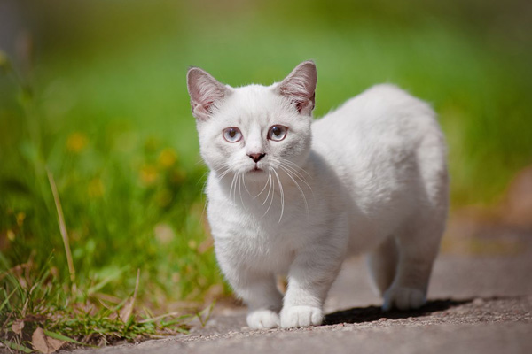
| Страна происхождения | США

|
| Тип шерсти | Короткошерстная, длинношерстная |
| Сложность ухода |

|
| Образ жизни | Активный |
| Рост в холке | до 16 см |
| Вес взрослого питомца | Кошка 2-4 кг Кот – 3-5 кг |
| Здоровье |
|
| Продолжительность жизни | 13-15 лет |
Происхождение породы
Манчкины появились из-за счастливой случайности. В 1983 году в штате Луизиана девушка нашла на улице кошку с необычно короткими лапками. Гражданка пожалела бедное животное и забрала его к себе домой. Кошке дали кличку Ежевичка.
Коротколапой любимице нашли кота с нормальными ногами для вязки. Неожиданно для всех, у пары родились котята с еще более короткими лапками. Так и выяснилось, что Ежевичка — не инвалид, а носитель интересного гена коротколапости.
Породу назвали в честь маленьких человечков из страны Оз, а стандарт манчкинов условно признали в 1991 году.
Описание манчкинов
Отличительная особенность этой породы — короткие лапки. Внешность кота может немного отличаться от приведенного стандарта, но с длинными ногами манчкин — не манчкин.
Такие кошки бывают с гладкой шерсткой, и с длинной. В целом манчкины описываются следующим образом:
- Голова клинообразной формы, с плавными переходами и закругленным затылком;
- Большие уши с неострыми кончиками и пушком внутри;
- Глаза в виде грецких орехов, широко поставлены под небольшим углом к носу. Цвет допустим любой;
- Толстая подвижная шея средней длины, характерны выраженные мускулы;
- Тело вытянуто, как у таксы, с небольшим возвышением к задней части. Вес манчкинов — от 2 до 4 кг;
- Передние лапки короче задних. Разрешается искривление во внутреннюю сторону;
- Шерсть с небольшим подшерстком хорошо защищает кота от воды.
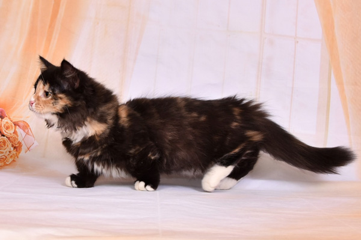
У короткошерстных манчкинов шубка плюшевая на ощупь и блестящая на вид. У однотонных окрасов шерсть может весить больше, чем у пятнистых.
Длинношерстные манчкины отличаются шелковистостью, а полудлинные волоски будто струятся по коту. Выражен воротничок из шерсти.
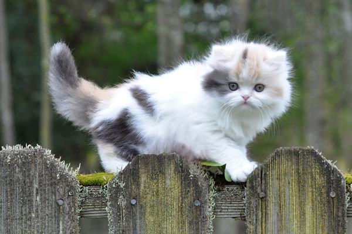
Окрасы кошек манчкинов
Стандарт породы разрешает любые варианты окрасов. Допустимы все возможные пятна, цвета и их сочетания. Нередко у манчкинов мордочка, грудка и животик более светлые — белого или кремового цвета.
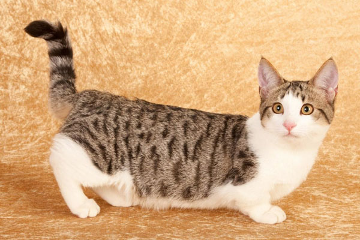
Особенно интересно выглядят пятнистые и полосатые окрасы — например, тэбби.
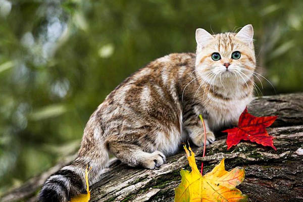
Характер манчкина
| Активность |
|
| Игривость |
|
| Общительность |
|
| Ласковость |
|
| Дружелюбность |
|
| Интеллект |
|
Это дружелюбные и ласковые кошки — они любят общаться с людьми и никогда не выбирают себе любимчика, уделяя внимание всем членам семьи одинаково. Обожают, когда их гладят и берут на ручки.
С таксами их роднит не только схожий внешний вид, но и характер — это преданные и храбрые коты с высоким интеллектом. Маленький охранник может даже суметь защитить жилище от соразмерного противника. Представителей породы можно дрессировать и учить некоторым трюкам.
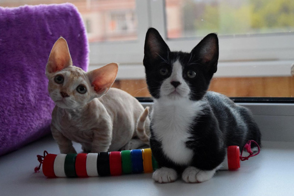
Манчкины — очень энергичные коты, готовые бегать целыми днями и ночами. Конечно, они не смогут забраться на высокий шкаф или стол, но легко заберутся на кровать и потребуют внимания к своей персоне. Маленькие лапки совсем не мешают ему весело прыгать и гонять мяч, поэтому будьте готовы к таким спортивным нагрузкам.
Эти коты могут и похулиганить. Манчкины любят собирать разные предметы и игрушки, чтобы спрятать в укромное местечко для своей коллекции. Особенно коротколапых котов привлекают блестящие вещички. Если периодически не разорять такое гнездо, оно достигнет внушительных размеров!
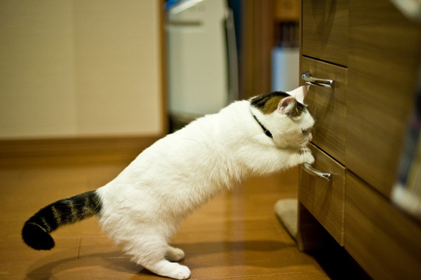
Еще одна забавная привычка этих котов — вставать на задние лапки, как суслики, если им чего-то не видно. При этом манчкины опираются на попу, и могут находиться в такой позе часами. Некоторые коты смотрят так телевизор, умиляя хозяев своим занятием.
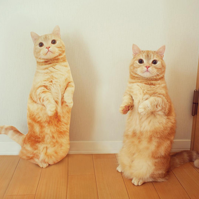
Совместимость с детьми и другими питомцами
Манчкины — довольно дружелюбные создания, да и драться короткими лапками не очень-то и удобно. Коты других пород воспринимают их как себе равных и не видят в такой длине лапок ничего странного, поэтому гнобить за необычный вид не станут.
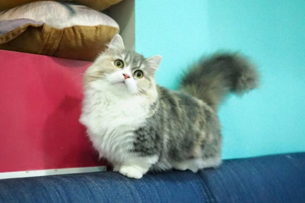
Сами коротколапые котики любят играть с друзьями в догонялки и шуточно драться. Собаки средних и крупных пород думают, что манчкин — это такой котенок, и иногда берут над ним опекунство.
Эти коты совместимы даже с птицами и грызунами — манчкин не сможет их поймать. Если поставить клетку к недоступное для кота место, он не перевернет её и не нашкодит. Однако лучше выпускать попугая или хомячка из клетки под присмотром, а лучше — в другой от манчкина комнате.
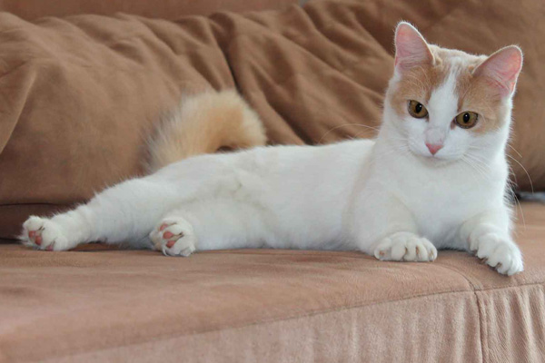
Дети любят коротколапых котов за милый вид и добродушный характер. Представители породы никогда не будут царапаться и кусаться, если их на это специально не провоцировать. Манчкины стерпят пеленание, катание на ручках и даже дерганье за хвост, но нарушение личного достоинства — ни за что. Объясните ребёнку, что кот — не игрушка, и все проблемы будут решены.
Уход за манчкином
Много внимания к гигиене эти коты-сорванцы не потребуют. Короткошерстных манчкинов нужно расчесывать щеткой раз в пару недель. Для длинношерстных приобретите гребень с частыми и редкими зубчиками и вычесывайте два-три раза в неделю. Обоим типам манчкина пригодится пуходерка, чтобы быстро вычесывать густой подшерсток во время линьки.

К купанию представители породы относятся по-разному: некоторые обожают, другие — терпеть не могут. Принимать ванну такому коту часто не нужно — достаточно раз в 2-3 месяца. Если ваш манчкин не любит купаться, можно использовать сухой шампунь для кошек, или ограничиться мытьем только в крайних случаях.
В кормлении манчкинов нет ничего необычного: подберите сбалансированный готовый корм или составьте меню из натуральной пищи. В последнем случае следите, чтобы в рацион не попадали запрещенные продукты: знакомство с ними может окончиться плачевно.
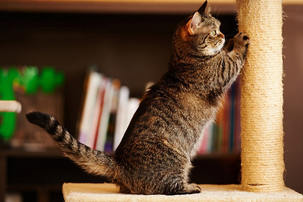
Особенности содержания
С первых дней котенка в вашем доме нужно правильно воспитывать. Питомец обязательно должен знать, где находится когтеточка, куда ходить в туалет и не бояться гигиенических процедур, в том числе и осмотров.
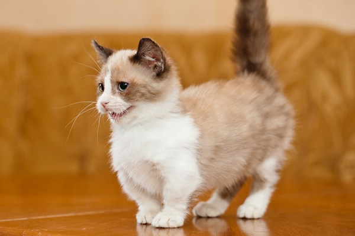
Манчкины любопытны и смелы, поэтому им обязательно понравятся прогулки. Проведите коту своевременную вакцинацию, купите и приучите к шлейке — и вперед! Гулять с котом лучше в парке, чтобы не пугать его машинами.
Дома коротколапый кот будет пытаться дотянуться до всего, чего можно, поэтому стоит направить его энергию. Манчкины умны, поэтому легко решают головоломки — увлеките питомца таким занятием.

Чтобы уберечь ценные вещи, прячьте их от кота повыше: все, что приглянется, он опрокинет или заберет к себе в коллекцию. Хорошим решением будет купить или построить коту развлекательный комплекс. Если ваш кот особенно активен, попробуйте придумать ему интересные задания.
Здоровье манчкина
Главная проблема котов-такс, конечно же, спина. Чаще всего эти питомцы болеют лордозом — искривлением позвоночника. Заболевание опасно из-за риска смещения внутренних органов под позвоночником и ослабления задних лапок.
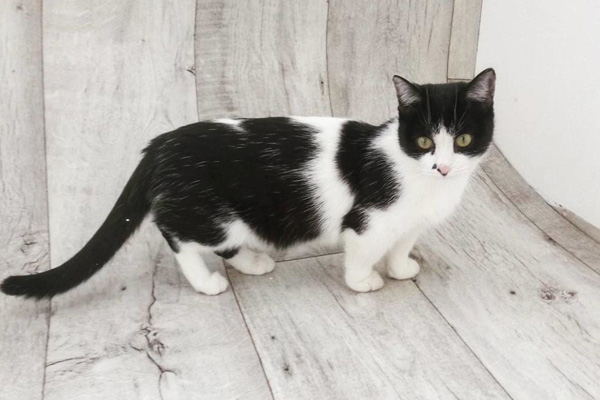
Важно знать, что для рождения здоровых котят нельзя скрещивать манчкина с манчкиным — для этого берутся представители других пород. Ген коротколапости, полученный от обоих родителей, может привести к смерти котенка еще до его рождения.
К сожалению, правилом доминантности генов часто пренебрегают. Некоторые заводчики скрещивают манчкинов с вислоухими кошками, с экзотами и сфинксами. Эти породы пока не признают, так как жизнеспособность и здоровье таких кошек не доказано.
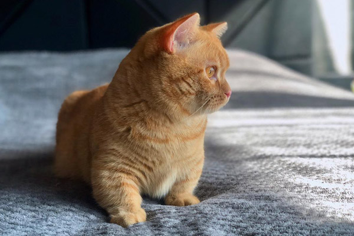
Средняя продолжительность жизни манчкина — 13-15 лет. При хорошем уходе коротколапый кот может легко дожить и до 20.
Понравилась статья? Поделись с друзьями!
.jpg)
.jpg)
.webp)
Посмотрите на эти породы
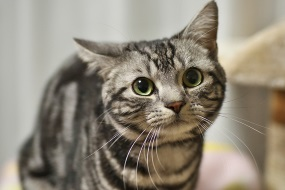
Американская короткошерстная
Интелигентная и послушная ленивка
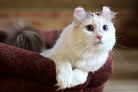
Американский керл
Смешные ушки-завитушки

Манчкин
Мягкий котик с короткими лапками
Смотрите, что советует кот
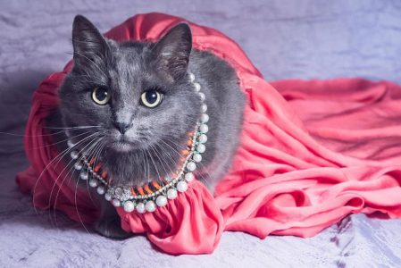
На подиум модного показа забралась кошка
06.05.2019
Котоновсти

Перхоть у кошки. Причины и лечение
02.09.2018
Лечение кошек
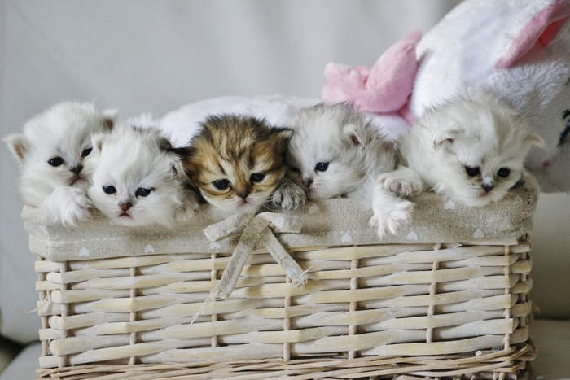
Как определить пол котенка: кот или кошка
07.11.2021
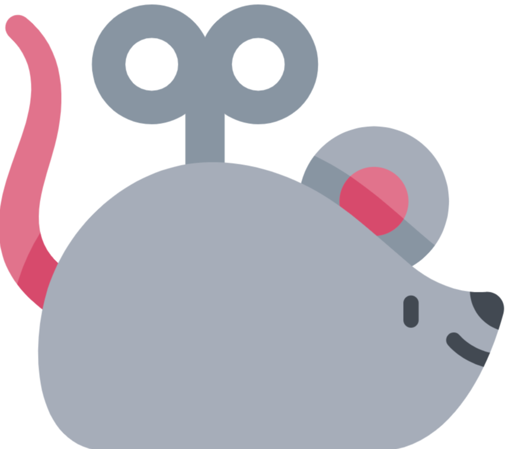
Воспитание котят